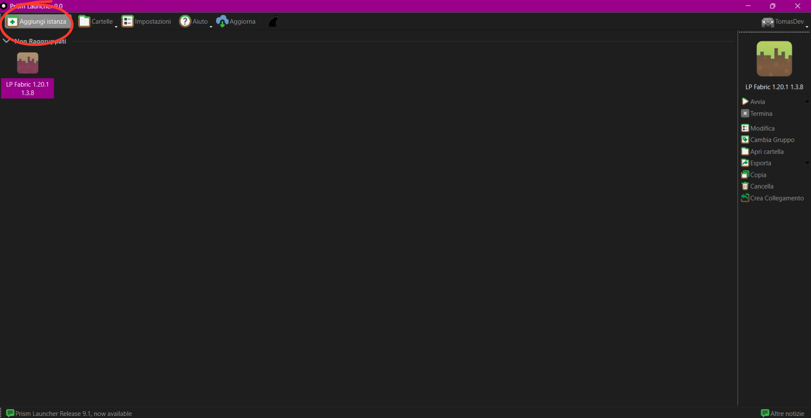
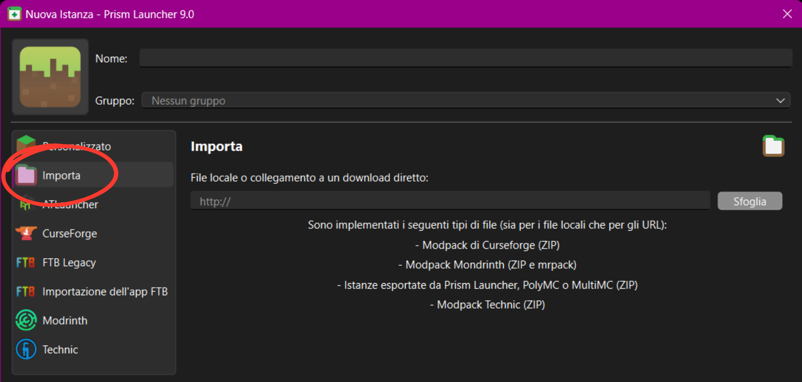
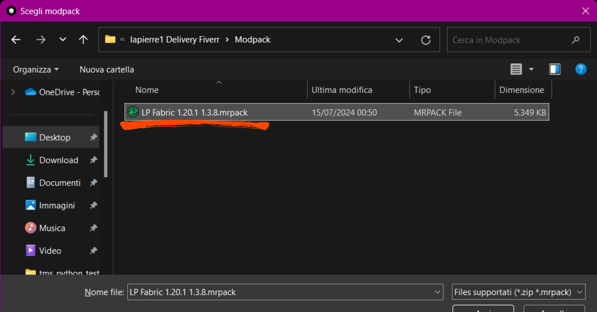
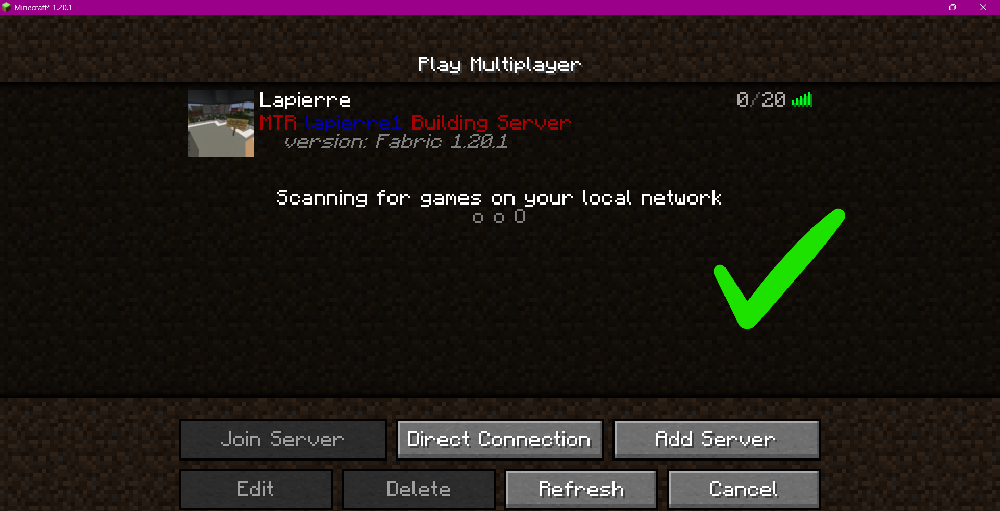

Métropole Project Guide
Guida al Progetto Métropole
Prism Launcher Tutorial
Tutorial Prism Launcher
Step 1:
Passo 1:
- Modpack: To join our server you need to install some associated mods. They are distributed as a Modrinth modpack that you can download from here.
- Modpack: Per unirti al nostro server, devi installare alcuni mod associati. Sono distribuiti come un pacchetto di mod Modrinth che puoi scaricare qui.

Step 2:
Passo 2:
- Add Instance: Open Prism Launcher and click "Add Instance" in the top-left corner.
- Aggiungi un'istanza: Apri Prism Launcher e fai clic su "Aggiungi istanza" nell'angolo superiore sinistro.

- Importing the .mrpack: Go to "Import," click on "Browse," and locate the file with the `.mrpack` extension that you downloaded in Step 1. Select it and click "OK." It may take a few minutes to install all the mods. Once the process is complete, you can launch the game.
- Importazione del .mrpack: Vai su "Importa," fai clic su "Sfoglia" e individua il file con l'estensione `.mrpack` che hai scaricato nel Passo 1. Selezionalo e fai clic su "OK." Potrebbe richiedere alcuni minuti per installare tutti i mod. Una volta completato il processo, puoi avviare il gioco.


Step 3:
Passo 3:
- Joining the server: Once the game is launched, go to "Multiplayer," click on "Add Server," and enter the following IP address: `lapierremtr.falixsrv.me`. You can choose any name you prefer for the server.
- Unirti al server: Una volta avviato il gioco, vai su "Multiplayer," fai clic su "Aggiungi server" e inserisci l'indirizzo IP seguente: `lapierremtr.falixsrv.me`. Puoi scegliere qualsiasi nome preferisci per il server.
